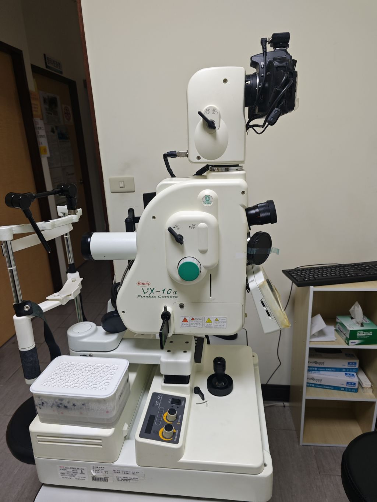
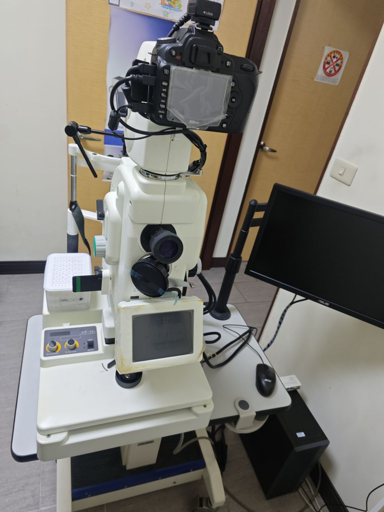
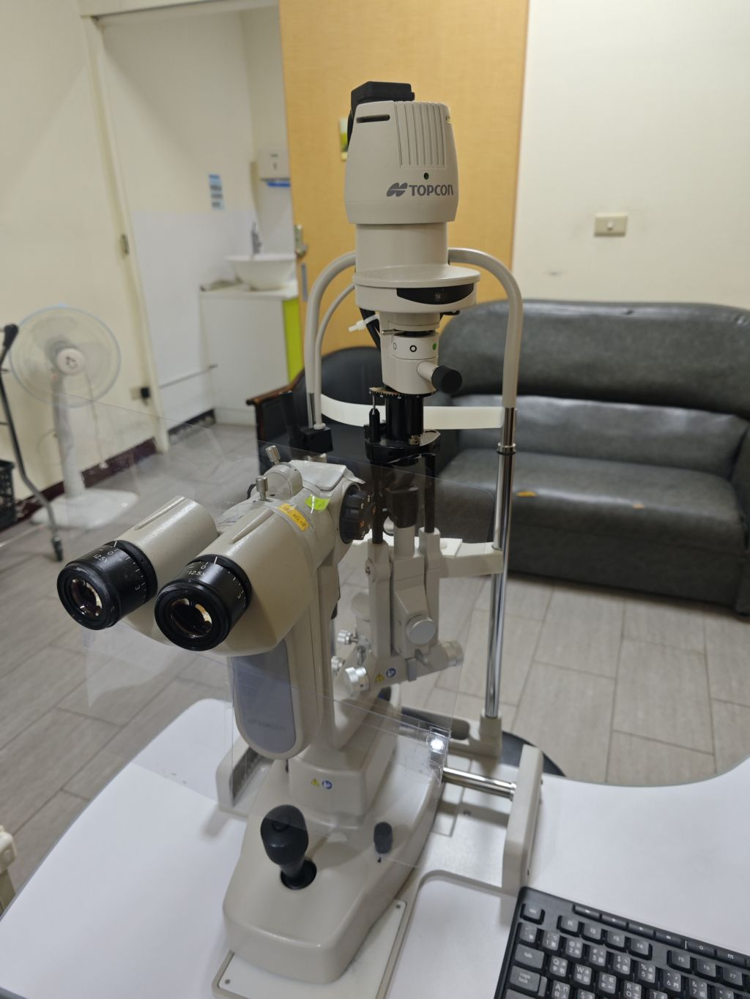
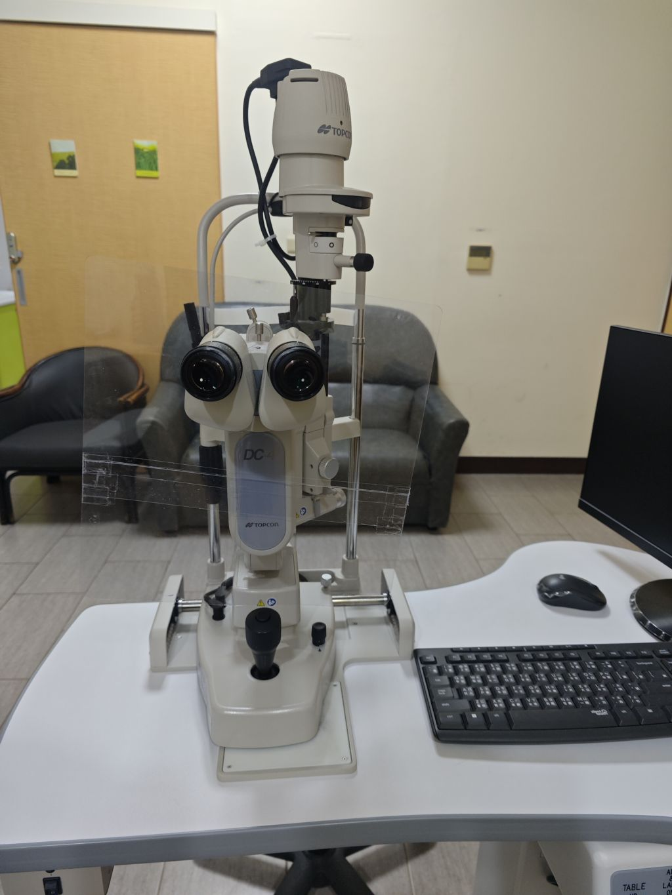
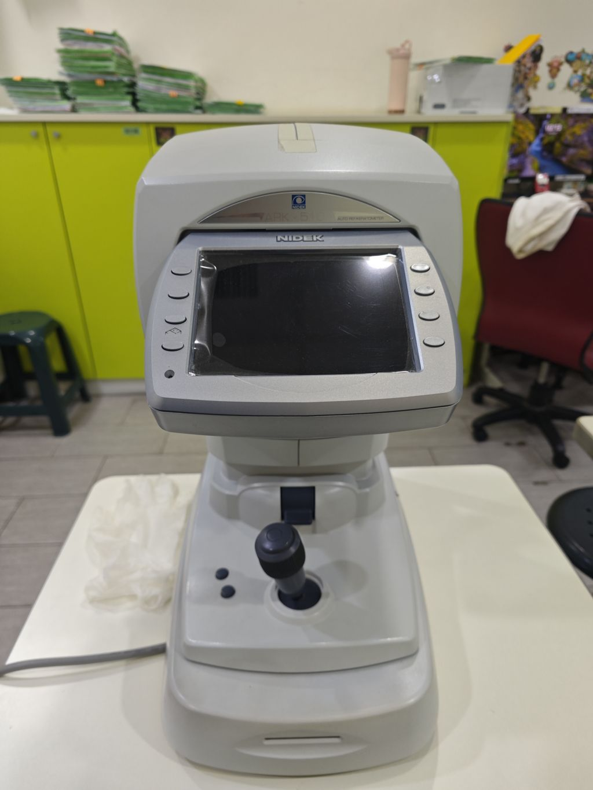
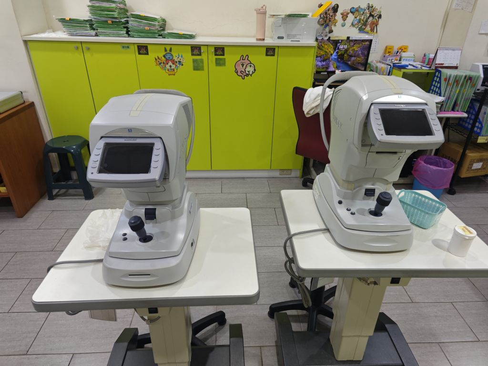

精準、個別化的代謝與內分泌照護
活力醫療中心新陳代謝科，致力於提供全方位的糖尿病、甲狀腺及各類內分泌疾病的精準診療。我們擁有經驗豐富的專科醫師、專業糖尿病衛教師與特約營養師團隊，提供從疾病診斷、藥物調整到生活飲食衛教的一條龍服務。
我們深知慢性病需要長期的陪伴與管理，因此引進全方位連續血糖監測觀念，協助病友穩定控糖、積極預防倂發症。無論是三高管理、甲狀腺結節追蹤或是代謝異常，我們都將陪伴您穩健守護健康。

專業醫師陣容
張毓泓 醫師
- 新陳代謝科、內分泌疾病診斷
- 糖尿病共同照護與個別化精準控糖
- 甲狀腺結節超音波追蹤與高階檢驗
- 高雄醫學大學 醫學系畢業
- 前 醫學中心 內分泌新陳代謝科主治醫師
- 中華民國 內科專科醫師證書
- 內分泌新陳代謝科 專科醫師證書
- 糖尿病共同照護網 認證醫師
張道明 醫師
- 新陳代謝科、內分泌疾病診斷
- 糖尿病共同照護與個別化精準控糖
- 甲狀腺結節超音波追蹤與高階檢驗
- 高雄醫學大學 醫學系畢業
- 前 醫學中心 內分泌新陳代謝科主治醫師
- 中華民國 內科專科醫師證書
- 內分泌新陳代謝科 專科醫師證書
- 糖尿病共同照護網 認證醫師
特色醫療服務
糖尿病共同照護門診
結合醫師、衛教師與營養師，提供個人化控糖計畫、年度視網膜與足部篩檢追蹤，協助積極穩定糖化血色素。
甲狀腺與內分泌疾病
專治甲狀腺機能亢進/低下、甲狀腺結節追蹤、腦下垂體及腎上腺病變，提供精準的荷爾蒙調理與抽血檢驗。
三高與代謝症候群管理
針對高血壓、高血脂、高尿酸（痛風）及肥胖症，提供科學化的藥物治療與飲食調整方案，降低心血管疾病風險。
醫療設備與環境導覽
🔍 點擊圖片可全螢幕放大觀看






×